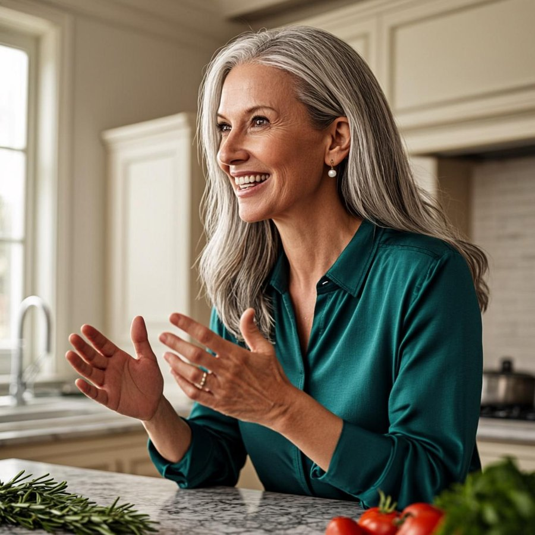

Я — Богдана Козырева. Сибирячка, построившая свой бизнес после 50. За 30 дней я покажу тебе, как есть вкусно, сытно и без чувства вины — и при этом молодеть. Меню на каждый день, рецепты из соседнего магазина и рецепты красоты из собственной кухни.
Без голода · без спортзала · без «чудо-капельниц» · простые продукты

Этот марафон — для тебя. Доступ — бесплатный.
Убираем сахар и «пакетики», налаживаем воду, начинаем ходить. Быстрые победы с первого дня.
Белок в каждый приём, клетчатка 30 г, живые жиры. Базовые рецепты, которые готовятся за 20 минут.
Утренний ритуал, 8000 шагов, здоровый сон. Мы не худеем — мы оживаем.
Привычки на года: застолья без срыва, меню на месяц, протокол «упала — встала». И выпускной!
Каждую неделю марафон начинается с личного аудио-приветствия. Вот первое:
Мне семьдесят, и я помню себя в тридцать — уставшую, недовольную собой, вечно на диете между «понедельником» и «после праздников». Я перепробовала всё: считала калории, ела по часам, извинялась за каждый кусочек.
А потом поняла простую вещь: тело — не враг, которого надо укрощать. Это дом, в котором тебе жить всю жизнь.
Я построила бизнес в пятьдесят пять, когда все говорили «поздно». Похудела на четырнадцать килограммов в шестьдесят, когда все говорили «в твои годы уже не получится». Не слушай «уже не получится» — это слова людей, которые сами не попробовали.
За эти 30 дней ты приготовишь десятки блюд, пройдёшь десятки километров и попробуешь маски из собственной кухни. Ты докажешь себе, что можешь. Что в любом возрасте всё в первый раз. Что красивая, здоровая, энергичная — это не «мне повезло», а «я так решила».
У тебя всё получится. Я в тебя верю — я же вижу, ты уже здесь и уже готовишь свой день первый.
Обнимаю. До встречи на кухне, — твоя Богдана
Полный список с граммовками — внутри марафона. Закупка раз в неделю — и холодильник всегда на твоей стороне.
Каждый вечер закрашиваешь день. Психология проста: цепочка из 10 дней держит крепче любой силы воли.
+ дневник самочувствия: что ела, как спала, настроение, победа дня.
«30 дней — это привычка на жизнь. Я рядом»
Оставь заявку — и получь полный марафон: меню на каждый день, рецепты, голосовые письма Богданы, дневник и трекер.
Бесплатно · Без карты · Старт в любой день
Оставь имя и Telegram — Богдана лично пришлёт доступ к марафону и первый день.
Никакого спама. Только марафон и забота.
Богдана уже заваривает чай и пишет тебе в Telegram. Проверь сообщения в ближайшие сутки.